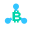

Hilos Chat
Speech bubble · Violet center · #8B5CF6 · Master SVG

chat
HIL-1539 · Second draw of the HIL-1316 research samples, for owner review. Three plain blue nodes without spokes and one approved center color per demo. The same editable SVG is shown at 16, 32 and 64 CSS pixels on both backgrounds. View at 100% browser zoom.
Speech bubble · Violet center · #8B5CF6 · Master SVG
chat
Check mark · Green center · #16A34A · Master SVG
tasks
Answer options · Blue center · #3B82F6 · Master SVG
polls
Bitcoin · Orange center · #EA580C · Master SVG
binance-btc-tracker

Flower · Pink center · #DB2777 · Master SVG
ecommerce-shop
Graduation cap · Gold center · #B58B00 · Master SVG
online-testing
At 16 px, compare the marks side by side first; at 32 and 64 px, check the central
detail and the three plain blue nodes, #32C5FF in every mark. Each center has
its own color, named on its card, and its own shape; both must tell the demos apart.
All six use their master at every size and the same shade on both backgrounds. The light-blue nodes are soft on white; names stay beside marks. Bitcoin and the graduation cap need the closest small-size review.
This sheet loads only local SVG files. It needs no server, JavaScript, web fonts or network. Production favicons and headers are a separate implementation after review.